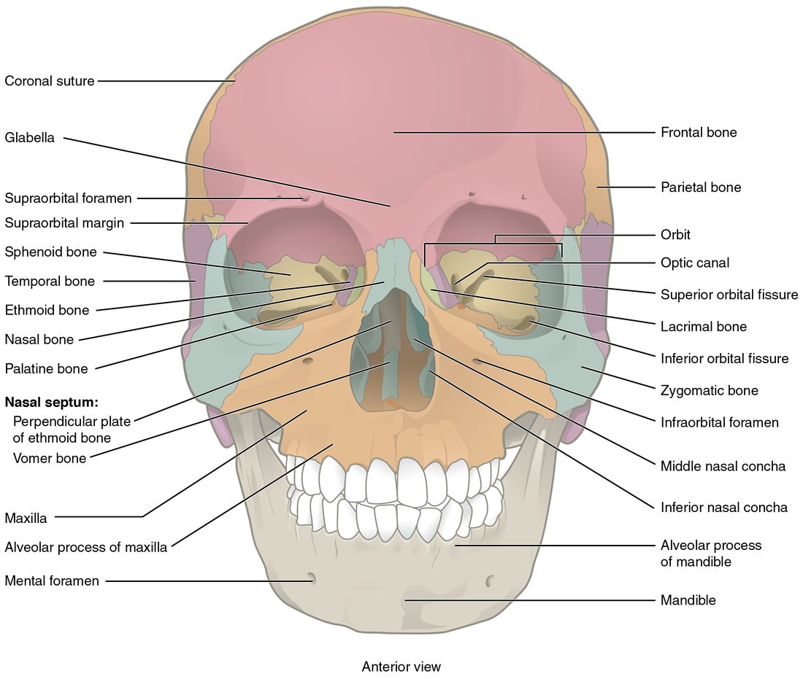
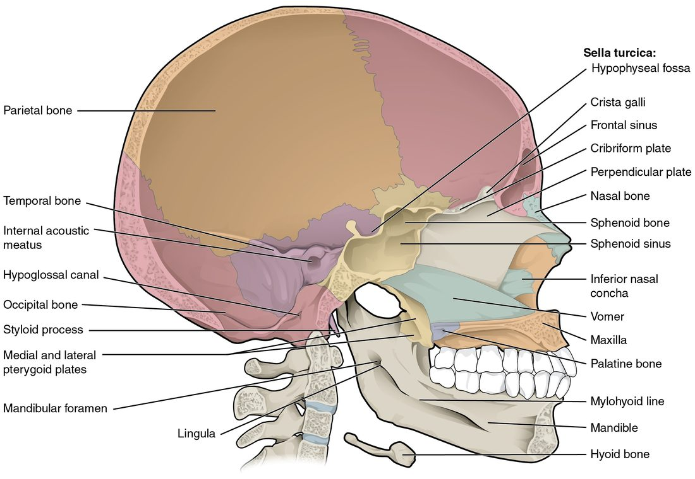
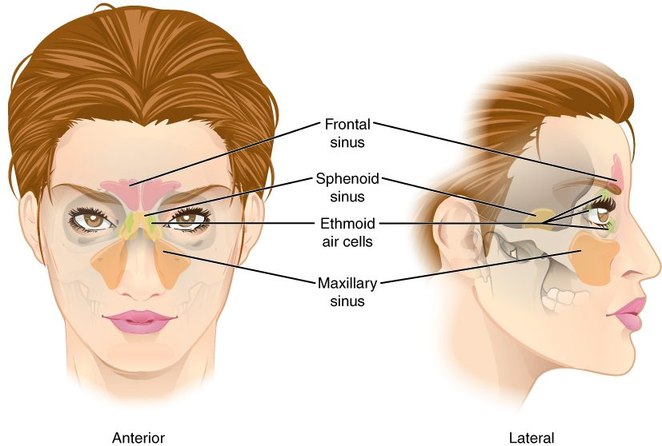
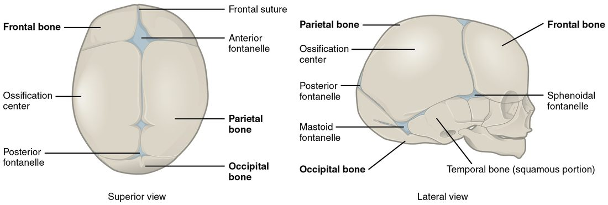

Your skull is not one bone. It is 22 bones, most of them locked together along wavy seams, with one hinged lower jaw. This page gives you the skull bones labeled and explained: the eight bones of the brain case, the fourteen bones of the face, the seams between them, the openings that nerves and vessels pass through, the air spaces inside, the soft spots of a newborn's skull, and the small hyoid bone in your neck. It starts with the big picture: how the whole skeleton divides into two parts.
The two divisions of the skeleton
An adult skeleton usually has 206 bones. Anatomists split them into two groups by where they sit (Figure 1).
- The axial skeleton (axis = the central line of the body) forms the upright core: the skull, the hyoid bone, the six tiny bones inside the ears, the backbone and the rib cage (the ribs and the breastbone). It has 80 bones. It surrounds the brain, the spinal cord and the organs of the chest, and it carries the weight of the head and trunk.
- The appendicular skeleton (append- = to hang on) holds everything that hangs off that core: the bones of the arms and legs, plus the bony rings that attach them to the trunk, the collarbones and shoulder blades above and the hip bones below. It has 126 bones. It is built mainly for movement.
A quick test: if a bone lies on or near the midline of your trunk or head, it is axial. If it belongs to a limb, or links a limb to the trunk, it is appendicular. So the hip bones are appendicular even though they sit low on the trunk: their job is to anchor the legs.

The skull: brain case and face
Put your hand on the top of your head, then on your cheek. Both are skull, but they belong to two different sets of bones.
- The cranium (kranion = skull), also called the brain case, is the rounded box of eight cranial bones that surrounds the brain. Its dome-shaped top, the part a skullcap would cover, is the calvaria (calvaria = skull top). Its floor is the base of the skull. The space inside is the cranial cavity, the upper part of the dorsal body cavity.
- The fourteen facial bones build the front of the head: the upper and lower jaws, the cheeks, the nose and part of the eye sockets.
Almost all of these are flat bones or irregular bones, the shape classes you met with bone structure. The flat bones of the brain case form by intramembranous ossification: bone is laid down directly inside a sheet of connective tissue, with no cartilage model first. That fact explains the soft spots of a baby's head, later on this page.
| Cranial bones | Facial bones | |
|---|---|---|
| Number | 8 | 14 |
| Paired bones | Parietal and temporal | Maxilla, zygomatic, nasal, lacrimal, palatine and inferior nasal concha |
| Single bones | Frontal, occipital, sphenoid and ethmoid | Vomer and mandible |
| What they surround | The brain | The mouth, the nose and the front of the eye sockets |
| Movable bone? | None | The mandible |
The eight cranial bones
Find each of these on the side view of the skull (Figure 2) and the front view (Figure 3).
- Frontal bone (1): the forehead. It forms the roof of each eye socket and the front of the brain case.
- Parietal bones (2; pariet- = wall): the large side walls and most of the roof of the brain case.
- Temporal bones (2; tempor- = time, because the hair at the temples grays first): the lower sides of the brain case, around each ear. Each has a thin, scale-like upper part, the ear opening, the knob behind the ear and the dense rock-like ridge inside the skull that holds the organs of hearing.
- Occipital bone (1; occiput = back of the head): the back and much of the base of the brain case. The large hole at its base is the foramen magnum.
- Sphenoid bone (1; sphen- = wedge): a single bat-shaped bone wedged across the middle of the skull base. You can see a small part of it, its greater wing, on the side of the skull between the frontal and temporal bones. Inside, it holds the saddle-shaped hollow for the pituitary gland.
- Ethmoid bone (1; ethm- = sieve): a light, delicate bone between the eye sockets, behind the nose. It forms the roof of the nose, the upper part of the bony wall that divides the nose, and part of the inner wall of each eye socket.

Sutures: the seams of the skull
Look at a skull and you see wavy lines where the bones meet. These are sutures (sutura = seam). In a suture, the jagged edges of two bones interlock like puzzle pieces, and a thin layer of dense connective tissue binds them. In an adult, sutures let the bones move almost not at all. Four are large enough to name:
- The coronal suture joins the frontal bone to the two parietal bones. It runs across the top of the head from side to side, in a frontal (coronal) plane, like the band of a crown (corona = crown).
- The sagittal suture joins the two parietal bones along the midline, in the sagittal plane.
- The lambdoid suture joins the parietal bones to the occipital bone at the back. Together with the sagittal suture it makes the shape of the Greek capital letter lambda (Λ).
- The squamous suture (squam- = scale) joins each parietal bone to the thin, scale-like upper part of the temporal bone below it.
The pterion
On the side of the head, about two finger-widths above the middle of the cheek arch, four bones meet in a small H-shaped area: the frontal, parietal, temporal and sphenoid bones. This area is the pterion (pter- = wing, for the sphenoid's wing). It is one of the thinnest parts of the skull, and a large artery runs along the inside of the bone right there. A hard blow to the temple can crack the bone and tear the artery. Blood then collects between the skull and the brain's outer covering and presses on the brain. This is why a person hit at the temple needs urgent care even if they seem fine at first.
The fourteen facial bones
Use Figure 3 for this list.
- Maxilla (2; plural maxillae), also called the maxillary bone: the upper jaw. It holds the upper teeth, forms the floor of each eye socket and most of the bony roof of the mouth, and contains the largest air space of the skull.
- Zygomatic bones (2; zygo- = yoke, join): the cheekbones. They form the outer wall and floor of each eye socket.
- Nasal bones (2): two small bones forming the bridge of the nose. Below them, the nose is shaped by cartilage.
- Lacrimal bones (2; lacrima = tear): tiny bones in the inner wall of each eye socket. A groove in each leads into the canal that drains tears into the nose.
- Palatine bones (2; palat- = roof of the mouth): L-shaped bones behind the maxillae. They form the back part of the bony roof of the mouth and a small part of each eye socket.
- Inferior nasal conchae (2; concha = shell): curled shelves of bone on the side walls of the nose. The superior and middle nasal conchae are parts of the ethmoid bone; the inferior nasal concha is a bone of its own.
- Vomer (1; vomer = plowshare), also called the vomer bone: a thin plate forming the lower back part of the wall that divides the nose.
- Mandible (1; mandere = to chew): the lower jaw, the only skull bone that moves freely.

The parts of the mandible
The mandible is shaped like a horseshoe with two upright arms at the back. Each arm is a ramus of the mandible (ram- = branch). The corner where the body turns up into the ramus of the mandible is the angle of the mandible, which you can feel below each ear. At the top of each ramus of the mandible are two projections. The rounded condylar process of the mandible at the back fits into the mandibular fossa, a hollow on the underside of the temporal bone just in front of the ear, and this is where your jaw hinges. The flat coronoid process of the mandible (Greek korōnē = crow, for its hooked, beak-like shape; -oid = like) in front anchors a chewing muscle.
Inside the brain case: the cranial fossae
Take the top off a skull and look down (Figure 4, lower drawing). The floor is not flat. It steps down in three levels from front to back, like stadium seats, and each level cradles a different part of the brain.
- The anterior cranial fossa is the shallowest, highest step. The frontal bone forms most of it, and it holds the front of the brain. Its back edge is the sphenoid's lesser wings.
- The middle cranial fossa is deeper and shaped like a butterfly. The sphenoid and temporal bones form it, and it holds the lower sides of the brain. Its back edge is the petrous ridge (petr- = rock), the dense ridge of each temporal bone that houses the hearing and balance organs.
- The posterior cranial fossa is the deepest step, formed mostly by the occipital bone. It holds the lowest, back part of the brain, which continues down through the foramen magnum as the spinal cord.
Landmarks in the floor
- The sella turcica (Turkish saddle) is a saddle-shaped formation of the sphenoid bone in the middle of the skull base. Its seat, a deep pocket called the hypophyseal fossa (hypophysis = the pituitary gland), holds the pituitary gland.
- The cribriform plate (cribr- = sieve) is the part of the ethmoid bone that forms the roof of the nose. It is full of tiny holes, and the nerve fibers for smell pass up through them.
- The crista galli (rooster's comb) is a small ridge of the ethmoid that sticks up from the middle of the cribriform plate. The brain's tough outer covering anchors to it.

Openings in the skull
A foramen (plural foramina; forare = to bore) is a hole through a bone. A canal is a longer tunnel, a fissure is a slit, and a meatus is a passage. Nerves and blood vessels run through all of them. Learn each one by the bone it is in and what goes through it.
| Opening | Bone | What passes through |
|---|---|---|
| Foramen magnum (the great hole) | Occipital | The lower end of the brain, where it becomes the spinal cord |
| Jugular foramen | Between temporal and occipital | The large vein draining the brain, and three nerves |
| Carotid canal | Temporal | The main artery to the front of the brain |
| Hypoglossal canal (hypo- = under, gloss- = tongue) | Occipital, just above each condyle | The nerve that moves the tongue |
| Optic canal (opt- = eye) | Sphenoid | The nerve of sight, from the eye to the brain |
| Superior orbital fissure | Sphenoid, between its wings | The nerves that move the eye, and a sensory nerve |
| Foramen rotundum (round) | Sphenoid | A sensory nerve branch to the cheek and upper teeth |
| The oval foramen of the sphenoid | Sphenoid | A nerve branch to the lower jaw and the chewing muscles |
| Foramen spinosum (spinosum = spiny, for the small spine of the sphenoid beside it) | Sphenoid | The artery to the brain's outer covering, the one at risk at the pterion |
| Foramen lacerum (torn) | Between sphenoid, temporal and occipital | Almost nothing: cartilage fills it in life |
| Internal acoustic meatus (acous- = hearing) | Temporal, on the petrous ridge | The nerves for hearing and balance and for the muscles of the face |
| External acoustic meatus | Temporal | Nothing: it is the bony ear canal, which carries sound in to the eardrum |
| Stylomastoid foramen | Temporal, between the styloid and mastoid processes | The nerve to the muscles of the face, on its way out of the skull |
| Supraorbital foramen (supra- = above) | Frontal, above each eye socket | A sensory nerve and vessels to the forehead |
| Infraorbital foramen (infra- = below) | Maxilla, below each eye socket | A sensory nerve and vessels to the cheek and upper lip |
| Mental foramen (ment- = chin) | Mandible, on the front on each side of the chin | A sensory nerve and vessels to the chin and lower lip |
| Mandibular foramen | Mandible, on the inner face of each ramus of the mandible | The nerve and vessels to the lower teeth |
| Nasolacrimal canal | Between maxilla and lacrimal bone | The duct that drains tears from the eye into the nose |
Two of these have everyday uses. A dentist numbs your lower teeth by injecting near the mandibular foramen, where the nerve enters the bone. And a skull fracture through the cribriform plate or the temporal bone's rock-like ridge can let clear fluid from around the brain leak out of the nose or ear, a sign that the base of the skull is broken.
Processes and landmarks on the outside
- The mastoid process (mast- = breast; -oid = like) is the rounded knob of the temporal bone you can feel behind your ear. It is full of small air cells and anchors muscles of the neck.
- The styloid process (styl- = pen, pointed stick) is a thin spike of the temporal bone pointing down below the ear. Ligaments and muscles of the tongue, throat and hyoid anchor to it.
- The zygomatic arch is the cheek arch you can feel in front of your ear. It is formed by two processes meeting: the zygomatic process of the temporal bone reaching forward and the temporal process of the zygomatic bone reaching back.
- The temporal fossa is the shallow hollow on the side of the skull above the zygomatic arch, and the infratemporal fossa is the space below the arch and behind the maxilla. Chewing muscles fill both.
- The occipital condyles are two rounded knobs beside the foramen magnum. They rest on the topmost vertebra, and the nodding "yes" movement of your head happens there.
The orbit and the septum of the nose
Each orbit (orbis = circle) is a cone-shaped eye socket, and seven bones build it: the frontal, zygomatic, maxilla, lacrimal, ethmoid, sphenoid and palatine. Two walls are thin. The floor lies over the large air space inside the maxilla, and the inner wall is made mostly of ethmoid and lacrimal bone. Both break easily when a fist or ball strikes the eye, and the floor breaks most often.
A septum (saept- = fence) is a dividing wall, and the septum of the nose divides it into right and left halves. Its bony part, the bony septum of the nose (Figure 5), has two pieces: the perpendicular plate of the ethmoid bone above and the vomer below. In front of them, the septal cartilage, made of hyaline cartilage, completes the wall in front, which is why the front of the dividing wall bends. The superior and middle nasal conchae stick out from the side walls as parts of the ethmoid, and the inferior nasal concha is its own bone. The conchae make the air swirl, which warms and moistens it.
The bony roof of the mouth is built from two pairs of bones: the palatine processes of the maxillae in front and the flat parts of the palatine bones behind. If the two sides fail to fuse before birth, a gap called a cleft palate remains.

The paranasal sinuses
Several skull bones are not solid. They hold air-filled spaces called the paranasal sinuses (para- = beside, nas- = nose, sinus = hollow). Each one is named for the bone it is in (Figure 6).
- The frontal sinus sits in the frontal bone, above the eyebrows.
- The maxillary sinus is the largest, one in each maxilla, beside the nose and below the eye.
- The sphenoid sinus sits in the body of the sphenoid, deep behind the nose, right under the pituitary gland.
- The ethmoid air cells are a cluster of small spaces in the ethmoid, between the eyes.
A mucous membrane lines every sinus and is continuous with the lining of the nose. Each sinus drains into the nose through a small opening. When that lining swells with a cold or an allergy, the openings can close. Mucus then collects inside, the pressure rises, and you feel pain over the blocked sinus: in the cheek for the maxillary sinus, above the eyebrow for the frontal sinus. This is sinusitis.
What the sinuses are for is not settled. They make the skull lighter than solid bone would, and they add their mucus to the nose, but whether either effect matters much, or whether the sinuses shape your voice, has not been shown clearly.

The newborn skull: fontanelles
A newborn's head has soft spots you can feel through the scalp. Here is why they exist.
The flat bones of the brain case form by intramembranous ossification. Each one starts at an ossification center in a sheet of connective tissue and spreads outward. At birth the bones have not grown far enough to meet each other (Figure 7). Where several of them should meet, a wide area is still covered only by tough fibrous membrane. Each of these areas is a fontanelle (fontanelle = little fountain, because a pulse can be seen in it), commonly called a soft spot.
- The anterior fontanelle is the largest, a diamond on top of the head where the frontal and parietal bones will meet. It usually closes between about 1 and 2 years of age.
- The posterior fontanelle is a small triangle at the back where the parietal and occipital bones will meet. It usually closes within the first 2 to 3 months.
- The paired sphenoidal and mastoid fontanelles on each side close between about 6 and 18 months.
The fontanelles and the still-open seams let the skull bones slide and overlap as the head passes through the birth canal, and they let the skull grow quickly as the brain grows. As the bones spread, the membranes shrink to the thin seams that become sutures.
Fontanelles also give a clinician a window. A sunken anterior fontanelle can mean an infant is dehydrated. A bulging, tense one in a calm, upright infant can mean the pressure inside the skull is too high.

The hyoid bone
The hyoid bone (hyo- = U-shaped, like the Greek letter upsilon) is a small U-shaped bone in the upper neck, just above the voice box. You can see it floating below the jaw in Figure 5. It is unusual: it does not touch any other bone. Ligaments hang it from the styloid processes, and muscles tie it to the mandible above and the voice box and breastbone below. The tongue attaches to it too, so it moves up and down each time you swallow. The hyoid sits sheltered under the mandible and rarely breaks from an ordinary blow. It breaks mainly when the neck is squeezed hard, so a hyoid fracture is a sign a forensic examiner looks for after strangulation.
Summary
The skeleton divides into the axial skeleton (skull, hyoid, ear bones, backbone and rib cage: 80 bones) and the appendicular skeleton (the limbs and the bones that attach them: 126 bones). The skull has 8 cranial bones (frontal, 2 parietal, 2 temporal, occipital, sphenoid and ethmoid) and 14 facial bones (2 maxillae, 2 zygomatic, 2 nasal, 2 lacrimal, 2 palatine, 2 inferior nasal conchae, the vomer and the mandible). The coronal, sagittal, lambdoid and squamous sutures lock the cranial bones together, and the pterion is the thin spot where four bones meet. The floor of the brain case steps down through the anterior, middle and posterior cranial fossae. Foramina and canals carry nerves and vessels; the foramen magnum carries the lower end of the brain into the spinal cord. The frontal, maxillary, sphenoid and ethmoid sinuses are air spaces lined by mucous membrane. Fontanelles are the membrane-covered gaps between a newborn's skull bones, and the hyoid is the one bone that touches no other.